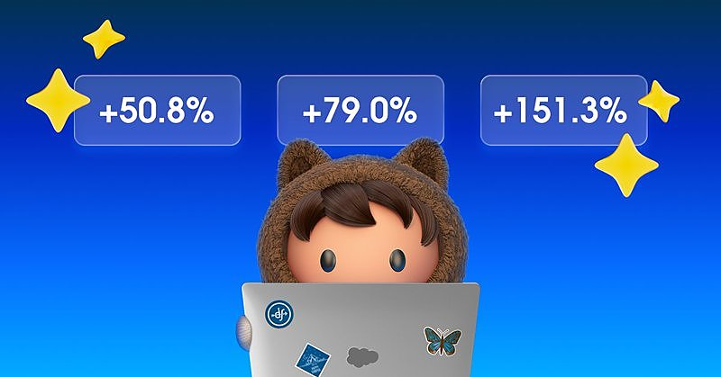
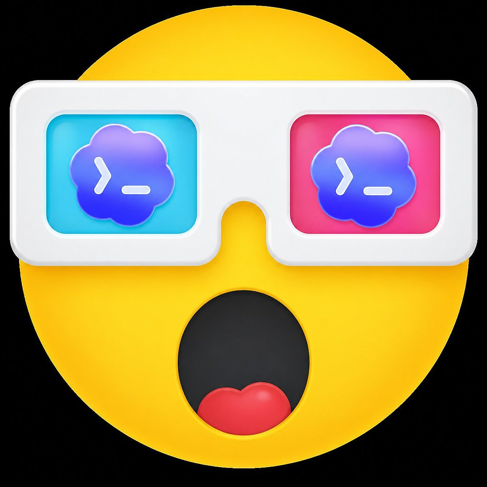
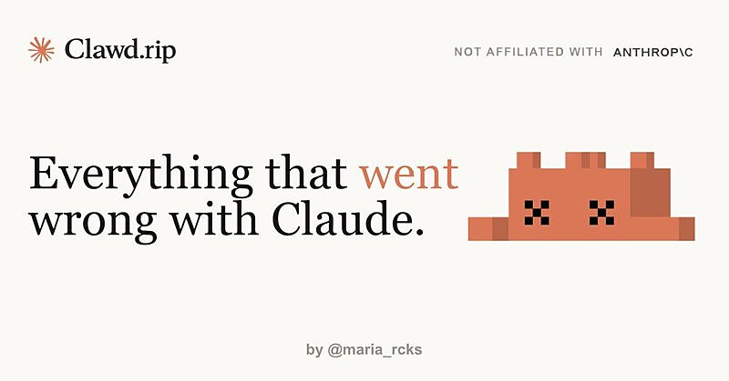
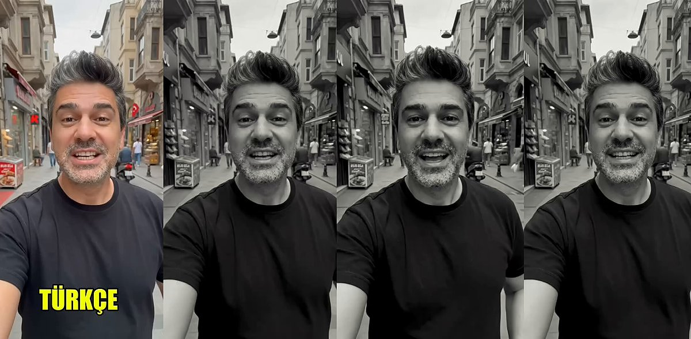
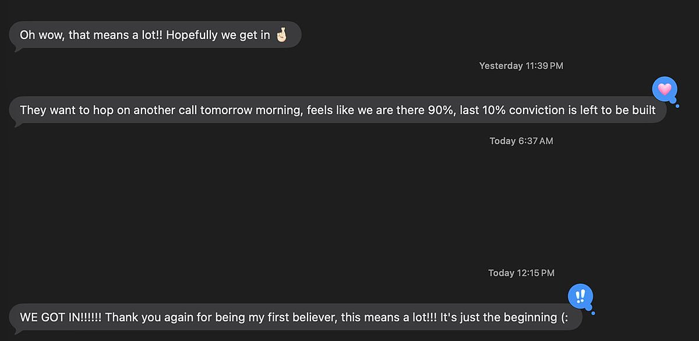
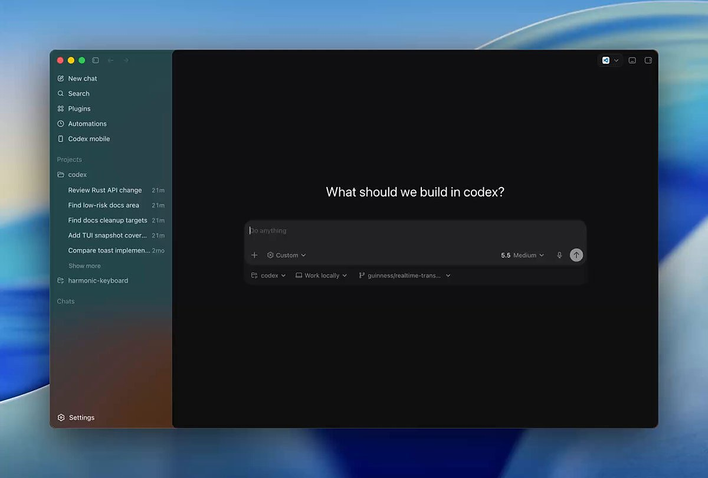

AI 日报 · 2026年5月31日
231 天→13 天，事故反降 5%；但有人花 5 亿美元自建，说明 AI 工具还远未定价
Salesforce 全面转向 agentic 工作流，一个预估 231 天的迁移任务 13 天完成，单 PR 交付 21 个 API 端点、测试覆盖率 100%，总事故反降 5%。OpenAI Codex 负责人暗示里程碑级数据即将公布。Box CEO Aaron Levie 犀利点评：有人花 5 亿美元自建就证明 SaaS 价值远未被定价捕获。No Priors 播客聚焦 AI Agent 安全——一个正在发生但被严重低估的领域。
agentic 开发
Claude Code
Salesforce
Codex
SaaS 价值
Agent 安全
OpenClaw
5
焦点事件
1
深度播客
8
追踪 Builder
15
GitHub 项目
今日要点
🧠 Salesforce × Claude Code：231 天缩减到 13 天，质量不降反升。 Anthropic Claude Code 团队成员 Boris Cherny 分享：Salesforce 全面转向 agentic 工作流，一个预估 231 天的迁移任务实际 13 天完成，单 PR 交付 21 个 API 端点且测试覆盖率达到 100%。更关键的是 PR 数量增加但总事故下降了 5%——安全审查和代码质量直接内嵌进了 agent 工作流，而非事后补课。
👀 OpenAI Codex 里程碑数据即将公布。 OpenAI Codex & ChatGPT 负责人 Thibault Sottiaux 发推称看到一个让他"很开心"的仪表板数字，暗示近期会有官方消息。同时抛出尖锐问题："你还相信 benchmark 吗，还是只听朋友的推荐？什么会让你尝试一个新模型？" 545 条回复说明 AI 工具选型标准是行业共同痛点。
Builder 动态
Boris Cherny、Thibault Sottiaux、Aaron Levie 等 8 位 Builder 今日发声
Boris Cherny (Claude Code @ Anthropic)
Salesforce 的 agentic 转型案例给出硬数据：一个预估 231 天的迁移任务 13 天完成，单 PR 交付 21 个 API 端点，测试覆盖率 100%。更关键的是，PR 变多但总事故下降 5%，说明安全与质量被直接嵌入了 agent 工作流。
真正获益的团队不是加速旧流程，而是在删步骤、消除交接，让 agent 端到端拥有任务。

Thibault Sottiaux (Codex & ChatGPT @ OpenAI)
Codex 负责人暗示仪表板上出现了令人振奋的数字，并预告很快会公布更多消息。同时抛出一个产品选型问题：你还相信 benchmark，还是只听朋友推荐？这正击中 AI coding tool 当前的真实购买标准缺口。

Aaron Levie (Box CEO)
针对某公司花 5 亿美元自建内部工具的新闻，Levie 的解读是：这反而是 App 层最好的广告。若企业愿意用九位数自建一个已有 SaaS 的版本，说明软件品类的真实价值远未被当前 SaaS 定价捕获。
自建巨额内部工具不是 SaaS 失败，而是软件价值仍被低估。
Peter Steinberger (OpenClaw)
OpenClaw 宣布 Vince 加入团队，Steinberger 的判断是：极少数人真正理解软件被构建的新方式，而 Vince 懂。同时他另一条「I smell a takedown in 3...2...1」暗示围绕 OpenClaw/AI coding 生态的争议仍在升温。


Garry Tan (YC CEO)
Garry 给创始人的提醒很直接：不要把「缺钱」误判成「缺需求」。资金不能点燃业务，只能给已经存在的火苗加速。先证明用户足够想要，再谈融资，否则钱只会放大一个还没成立的假设。
Money is not the fire. Money is gasoline you pour on a fire that already exists.
Josh Woodward (Google Labs / Gemini)
Josh 连续展示 Gemini 多模态能力：把汽车变成兰博基尼，以及让多语言能力变得「ridiculously easy」。相比单点 demo，这些片段共同指向 Gemini 的产品方向：把视觉编辑、语言转换和创作流收束成日常工具。

Nikunj Kothari (FPV Ventures)
Nikunj 转发 YC 面试过程相关内容，关注点是年轻创始人如何穿过 YC 的高压筛选。放在今天的语境里，这与 Garry 的「先找火苗」呼应：融资与加速器的价值建立在已有需求信号之上。

Dan Shipper (Every CEO)
Dan 简短转发「extremely sick」，延续 Every 对 AI 工具前沿 demo 的高频追踪。虽然信息密度不如其他 builder，但它是一个信号：AI-native 媒体/产品团队正在用转发流来捕捉工具生态的早期审美与采用迹象。

深度播客
用 AI 监督 AI——Onyx Security 的 Agent 安全方案
No Priors 播客采访 Onyx Security CEO Maxim Bar Kogan。Onyx 是一家以色列安全创业公司，专做"用 AI agent 看守 AI agent"。当企业指数级采用自主 AI agent，传统安全工具完全失效——你需要一个专用的 AI 系统来裁决 agent 操作是否合法。

分级裁决架构：小模型直觉 + 大模型深审
Onyx 训练很小的专用模型处理 90% 的日常裁决，只在关键节点唤醒更强 agent 做深度审查。类比国际象棋——顶级棋手多数走子靠直觉，只在关键节点长时间计算。既控制成本又保证可靠。
当前企业 AI 使用结构
超过 50% 是自主编码 agent，约 45% 是低代码自动化（拖拽式），仅 2% 是企业自建的一方 agent。自主 agent 是增长最快的类别，且目前几乎没有任何安全控制。
身份安全为什么对 agent 失效
传统安全第一道防线是限制权限。但 AI agent 恰恰相反——我们希望给它尽可能多的权限来完成各种任务。不可能为 agent 定义"正确的权限集合"，整个身份安全范式需要重新设计。
企业为什么不信任大模型厂商做安全
Anthropic 和 OpenAI 是"数据饥渴"的公司，企业不愿意把 agent 历史行为数据交给它们做安全分析。Onyx 作为独立第三方可以获得这些数据来做行为基线分析。
Mythos 级别模型即将到来——现在就该投资 AI 安全
Maxim 建议所有企业立即投资 AI 安全基础设施，不要等。一旦有 Mythos 级别的开源/中国模型出现，来不及补课的企业将完全暴露。
GitHub Trending · 5月31日
Agent 工具链与新开源项目持续活跃，微软 markitdown 入榜
harry0703/MoneyPrinterTurbo ⭐ 80,036 · Python
利用AI大模型，一键生成高清短视频 Generate short videos with one click using AI LLM.
microsoft/markitdown ⭐ 145,629 · Python
Python tool for converting files and office documents to Markdown.
OpenBMB/VoxCPM ⭐ 26,687 · Python
VoxCPM2: Tokenizer-Free TTS for Multilingual Speech Generation, Creative Voice Design, and True-to-Life Cloning
ruvnet/RuView ⭐ 71,115 · Rust
π RuView turns commodity WiFi signals into real-time spatial intelligence, vital sign monitoring, and presence detection — all without a single pixel of video.
anthropics/claude-code ⭐ 130,485 · Python
Claude Code is an agentic coding tool that lives in your terminal, understands your codebase, and helps you code faster by executing routine tasks, explaining complex code, and handling git workflows - all through natural language commands.
Crosstalk-Solutions/project-nomad ⭐ 29,046 · TypeScript
Project N.O.M.A.D, is a self-contained, offline survival computer packed with critical tools, knowledge, and AI to keep you informed and empowered—anytime, anywhere.
EveryInc/compound-engineering-plugin ⭐ 19,972 · TypeScript
Official Compound Engineering plugin for Claude Code, Codex, Cursor, and more
DataTalksClub/data-engineering-zoomcamp ⭐ 42,132 · Jupyter Notebook
Data Engineering Zoomcamp is a free 9-week course on building production-ready data pipelines. The next cohort starts in January 2026. Join the course here 👇🏼
OpenMOSS/MOSS-TTS ⭐ 3,136 · Python
MOSS‑TTS Family is an open‑source speech and sound generation model family from MOSI.AI and the OpenMOSS team. It is designed for high‑fidelity, high‑expressiveness, and complex real‑world scenarios, covering stable long‑form speech, multi‑speaker dialogue, voice/character design, environmental sound effects, and real‑time streaming TTS.
run-llama/liteparse ⭐ 925 · Rust
快速、友好的开源文档解析器，LlamaIndex 团队出品。
FareedKhan-dev/train-llm-from-scratch ⭐ 327 · Jupyter Notebook
从零训练 LLM 的实操教程，从下载数据到文本生成。
galilai-group/stable-worldmodel ⭐ 318 · Python
可复现的世界模型研究平台，用于评估和对比世界模型。
cursor/plugins ⭐ 205 · TypeScript
Cursor 插件规范和官方插件集。
chen08209/FlClash ⭐ 187 · Dart
基于 ClashMeta 的多平台代理客户端，简洁易用，开源无广告。
revfactory/harness ⭐ 55 · HTML
一个元技能（meta-skill），用于设计特定领域的 agent 团队、定义专用 agent 并生成其所需的技能。
今日三大信号：① agentic 开发效率数据持续涌现——Salesforce 案例 231 天→13 天、事故反降 5%，说明 agent 开发已进入可验证阶段而非 Demo 阶段；② OpenAI Codex 暗示里程碑级数据——工具赛道竞争白热化；③ Agent 安全获独立关注——No Priors 播客和 Onyx Security 的出现，说明 AI agent 安全正从附属于网络安全变为独立赛道。
Why This Matters
Agent 开发：速度与质量不再互斥
Salesforce 案例打破了"快=差"的工程常识——231 天→13 天的同时，总事故下降 5%。核心不是 agent 写代码快，而是他们把安全审查和代码审查直接内嵌进了 agent 工作流。agent 不是"更快的工程师"，而是一种全新的工程范式。
Agent 安全：现在就该投资的基础设施
Onyx Security 的出现和 No Priors 的深度讨论传递一个明确信号：Agent 安全不是一个可选的功能模块，而是企业部署自主 agent 的前提条件。当 50% 的企业 AI 使用是自主编码 agent 时，"没有安全控制"不是一个可接受的状态。
今日一问：当你的团队考虑采用 agentic 开发时，你更关心的是效率提升的倍数，还是 agent 操作的安全边界？Salesforce 的数据表明两者可能不是 trade-off。